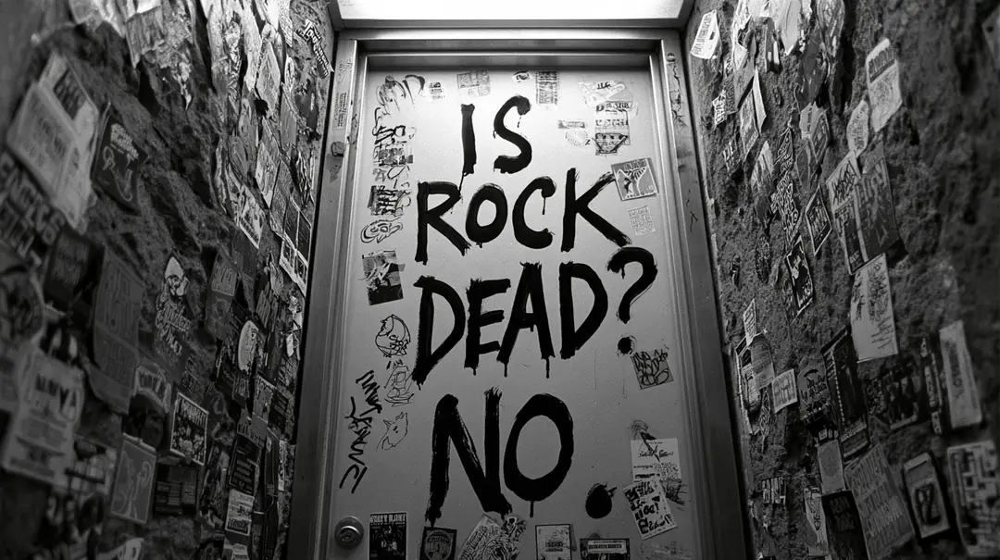
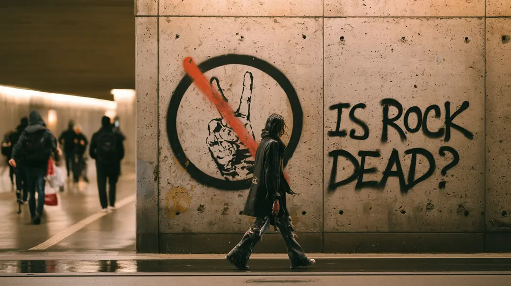
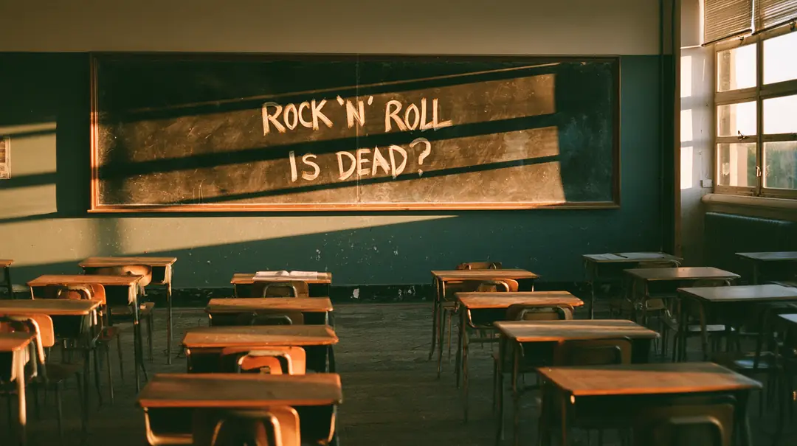
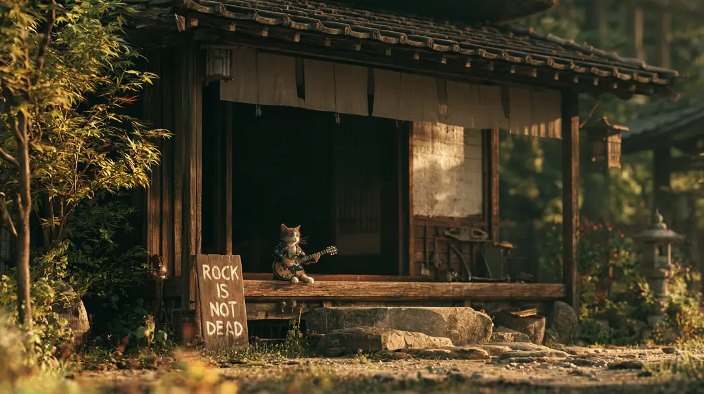

Series — The Angry Ones · vol.1
怒れる人々
〜ロックは死んだのか〜
シリーズ「怒れる人々」vol.1。
若者たちが、言葉にできない思いを音楽にぶつけてきた11曲。ぜんぶ、このページの中で聴ける。
IN THIS ISSUE
 CHAPTER 00
CHAPTER 00 CHAPTER 01
CHAPTER 01 CHAPTER 02
CHAPTER 02 CHAPTER 03
CHAPTER 03 CHAPTER 04
CHAPTER 04 CHAPTER 05
CHAPTER 05 CHAPTER 06
CHAPTER 06 CHAPTER 07
CHAPTER 07 CHAPTER 08
CHAPTER 08 CHAPTER 09
CHAPTER 09 CHAPTER 10
CHAPTER 10「ロックは、死んだ」。
1995年、レニー・クラヴィッツはそう歌った。じゃあ、本当に死んだのか。確かめに行こう。
ロックは、怒りだけでできているわけじゃない。抱えきれない思いや、言葉にならない気持ちの爆発。誰かの怒りを、代わりに叫んだもの。世の中や制度への苛立ち。毎日の鬱憤。それでも、怒りのエネルギーから生まれた曲があるのは確かで、若者たちはずっと、それを音楽にぶつけてきた。
国に。レールの上を走るエリートに。テレビに。働くことに。押しつけられる「こうあるべき」に。その怒りを、笑いや、踊れるリズムや、大合唱に変えてしまう人たちがいる。1977年のロンドンから、2020年代の京都まで。怒りがどう受け継がれてきたか、順番に追いかけてみる。
答えを先に言ってしまうと、まだ死んでいない。多分。
「ロックは死んだ」と、ロックスターが言った
Lenny Kravitz - Rock and Roll Is Dead
アルバム『Circus』 ／ 1995
1995年8月、アルバム『Circus』からの最初のシングルWikipedia。題名だけ聞いて、多くの人が「何を言ってるんだ」と首をかしげた。
本人いわく、完全な誤解だった。「みんな、歌詞の中身を聴いてくれなかった。言いたかったのは上っ面のことなんだ。イメージが、音楽や才能や芸術より優先されている。ロックスターになるのに、ヘロインを打つ必要も、決まった振る舞いをする必要もない。自分らしくあれ、ってこと」Songfacts。
その問いの18年前。ロンドンで、国そのものに怒る曲が出る。
放送禁止の、もうひとつの国歌
Sex Pistols - God Save the Queen
シングル ／ 1977.5.27
1977年5月27日発売Wikipedia。エリザベス女王の即位25周年を国じゅうが祝う年に、国歌とまったく同じ題名のシングルを出した。もともとの題は「No Future（未来なんかない）」だったWikipedia。
4日後の5月31日、BBCは放送を全面禁止したHISTORY。大手のレコード店も扱わなかった。それでも置いた店では、多いときで1日に15万枚売れた。なのに公式チャートは2位。しかもその2位の欄には、曲名すら印刷されず、空白の行が載ったHISTORY。音楽紙NMEのチャートでは1位。「チャートは操作された」という疑いは、今も語られているWikipedia。
歌ったジョン・ライドンは、30年後にこう振り返っている。「朝飯のテーブルで、ベイクドビーンズを食いながら書いた曲が、国をまっぷたつに割って、ポップカルチャーを変えた。そんな曲は、そう多くない」HISTORY。
怒りの矛先は、レコード会社でも、親の世代でもなく、国そのものだった。
国を怒った男たちの、4ヶ月後。同じロンドンで、ひとりの少女がデビューする。

写真：Koen Suyk／Nationaal Archief（CC0）

女の子は黙ってろ？ 束縛なんか、まとめてくたばれ
X-Ray Spex - Oh Bondage Up Yours!
デビュー・シングル ／ 1977.9
1977年9月、X-Ray Spexのデビュー・シングルWikipedia。書いて歌ったのはポリー・スタイリン。セックス・ピストルズのライブを観て、すぐに書いた。1976年の夏、19歳のときだWikipediaWikipedia。
題名の「Up Yours」は、イギリスの悪態。相手が心底嫌いだと示すときに使う、かなり無礼な言葉だCambridge Dictionary。手の甲を相手に向けて二本指を突き立てる侮辱のしぐさとセットで、とくに権威への反抗を表すWikipedia。だから題名は「ああ束縛よ、くたばれ！」。
何に怒っていたのか。ひとつは、女の子に向けられる「こうあれ」だ。曲は、女の子はおとなしく見られていればいい、口をきくな——そう考える人たちがいる、という静かな前置きで始まる。そして次の瞬間、彼女は題名を絶叫するWikipedia。
もうひとつは、買って、捨てて、また買う暮らしそのもの。芸名の「ポリスチレン（発泡スチロール）」も、使い捨ての文化への皮肉だった。本人いわく「これは解放の呼びかけ。消費のルールにも、自分の欲にも縛られない、ってこと」Wikipedia。「ボンデージ」と聞いて世間はSMの歌だと思ったけれど、本人は「物質の世界の束縛から自由になる歌。奴隷や、鎖につながれたサフラジェット（女性参政権運動家）のイメージがあった」と語っているTotally Wired。
叫ぶ声に、陽気なサックスがかぶさる。吹いていたローラ・ロジックは、当時16歳Wikipedia。BBCは放送を禁止したWikipedia。怒りは、最初から少しだけ笑っていた。
ロンドンの叫びは、海を越える。7年後、日本の村から。

写真：Mark Hillary（CC BY 2.0）

田舎者の、魂の叫び。しかも、ほぼ実話
吉幾三 - 俺ら東京さ行ぐだ
シングル ／ 1984.11.25
1984年11月25日のシングル。作詞作曲は吉幾三本人。最初の仮タイトルは『離村者』だったWikipedia。
本人はのちにこう明かしている。「田舎を出てきたときの気持ちを歌にしようと思った。なんにもないのがイヤで出てきたんだよな」。歌っているのは1984年の村ではなく、彼が上京した1968年3月の、ふるさとの姿だったねとらぼ。
地元の人に聞くと、当時の金木町にもテレビもラジオもあった。ただし吉さんの家は、本人いわく「町一番の貧乏家庭」で、本当にどっちもなかったねとらぼ。
売れるまでが長かった。1973年、20歳で「山岡英二」としてデビュー。路線は、なんとアイドル。ところが同じ時期に郷ひろみ・野口五郎・西城秀樹。「俺を通してくれないんだよ」スポニチ。1977年に吉幾三と名を変えて「俺はぜったい！プレスリー」がヒット。そのあと、また長い低迷が来るWikipedia。
この曲はどのレコード会社にも断られた。拾ったのは演歌の大御所・千昌夫。数百万円で原盤権を買い取って、世に出したWikipedia。のちに吉は、アメリカに渡った知人から送られてきたラップのレコードがヒントだった、と語るようになるWikipedia。
大ヒットのあと、事務所の電話が鳴りやまなくなる。「生まれたところをバカにすんな！」東スポ。吉が「子どもの頃はなかっただろうが」と言い返して、けんかになったこともあるねとらぼ。
もう1本 — 公式の「俺ら東京さ行ぐだ」
村から東京へ。で、その東京。レールの上を走るエリートたちを、冷たく笑うバンドがいた。

写真：TheoryJ（CC BY-SA 4.0）
レールの上のエリートに、冷たい一発
BOØWY - ELITE
アルバム『MORAL』 ／ 1982.3.21
1982年3月21日に出たデビュー・アルバム『MORAL』の4曲目BOØWY資料集。作詞作曲は氷室京介。当時のクレジットは「氷室狂介」——狂うの「狂」だったBOØWY資料集。
住宅ローン、かわいい子ども。誰もが描く「幸せ」の設計図を並べてみせて、その上で、同じレールに乗って人を蹴落とす連中を突き放す。怒鳴らない。冷たく笑って、切り捨てる。レールの上を走る側への、短くて鋭い一撃。
冷たく笑う人がいれば、テレビの電波に乗せて、本当にやらかしてしまう人もいた。

写真：Marie-Sophie Mejan（CC BY 4.0）
その夜、テレビが事件になった
THE TIMERS - FM東京
フジテレビ『ヒットスタジオR&N』 ／ 1989.10.13
今や伝説の、THE TIMERSの放送事故だ。忌野清志郎に“よく似ている人物”ZERRYが率いる覆面バンドWikipedia。
火種は前の年。RCサクセションのアルバム『COVERS』は、原発を歌った「サマータイム・ブルース」などが問題にされ、当時の親会社・東芝からの圧力で発売中止になった。新聞広告の文句は「素晴しすぎて発売出来ません」Wikipedia。その後、別の会社から出たが、FM東京はオンエアを自粛したWikipedia。タイマーズの「土木作業員ブルース」もFM東京で放送自粛ENCOUNT。
1989年10月13日、フジテレビの深夜の音楽番組『ヒットスタジオR&N』。予定の曲を歌わずに、いきなり始めたのが、FM東京とFM仙台を名指しで罵倒する新曲「FM東京」だった。放送禁止用語つきENCOUNT。言い出しっぺはギターのTOPPI（三宅伸治）。「何かやらかしましょうか？」。二人で曲を作ったが、清志郎がつけたある歌詞を見て「すげえ。半端な気持ちだった自分とは、覚悟が違った」サイゾー。
司会の古舘伊知郎は、夕方のリハーサルで気づいていた。「歌の中で古舘伊知郎って26回言ったんですよ。本番でそこに違う言葉をはめるんだな、と」。楽屋に乗り込むと、返事は「大丈夫、大丈夫！古舘君、迷惑は掛けないから」。本番、出演者は笑い転げ、「僕だけ青ざめてる」。放送後に文句を言いに行くと、もう楽屋にいなかった。2週間後、西麻布のワインバーで鉢合わせした清志郎は、立ち上がって深々とおじぎし、小さな声で「ごめんなさい、古舘くん」スポニチ。
関連動画 — 司会者が振り返るあの夜、火種になった曲
テレビという最大の拡声器で怒った夜のあと、怒りは、もっと小さな場所で、もっと手作りに鳴り始める。海の向こうの、小さな町で。
女子は前へ。「女らしく」は後ろへ
Bikini Kill - Rebel Girl
シングル（プロデュース：ジョーン・ジェット） ／ 1993
1990年、アメリカ北西部ワシントン州の小さな町オリンピアで結成。ボーカルはキャスリーン・ハンナWikipedia。彼女たちが火をつけた動きは「ライオット・ガール」と呼ばれる。フェミニズムを掲げた、パンクの運動だWikipedia。
何に怒っていたのか。ハンナは回想録にこう書いている。土曜の昼、ダイナーで本を読んでいると、知らない男が勝手に同じテーブルに座ってくる。忙しいと断ったら、本を取り上げられて頭の上に掲げられた。夜、ライブで踊れば男たちに囲まれる。だから、踊るのをやめた。「性差別は私に、家にいろ、世の中に出てくるな、と言っていた」ELLE。
当時のパンクのライブは、最前列のモッシュで、女性がしょっちゅう暴行を受ける場所でもあったWikipedia。そこでハンナは、ライブで言い始める。「ガールズ・トゥ・ザ・フロント（女子は前へ）」。最前列で男がモッシュしていると、女の子からベースを弾くキャシの手元が見えない。「女の子が楽器を弾くところを見られなかったら、どうやって女の子がバンドを始めるの？」ELLE。安いスピーカーで歌詞が聞こえないから、ライブの前には女の子たちに歌詞カードを配って回った。野次る男がいれば、客席に飛び込んで自分でつまみ出したELLEWikipedia。
返ってきたのは「男嫌い」「逆差別」という罵声。それでも最前列には、いつも5、6人の女の子がいた。バンドは、その子たちのために演奏したELLE。
「Rebel Girl」は、その場所で鳴った曲だ。歌われているのは、ひとりの女の子への、隠しもしない憧れと恋。男が女を歌うのが当たり前だったラブソングの型をひっくり返して、女の子が女の子をまっすぐ讃える。それがそのまま、女同士の連帯の歌になったWikipedia。シングル版をプロデュースし、ギターとコーラスで加わったのは、ザ・ランナウェイズ出身のジョーン・ジェットWikipedia。2021年、Rolling Stone誌の「史上最高の500曲」で296位Wikipedia。2024年に出たハンナの回想録の題名も、『Rebel Girl』だELLE。
怒りは海を越えて、女子の場所を作った。一方、日本の日常では、怒りは今日も飲み込まれている。たとえば、バイト先のレジの前で。
「いらっしゃいませ」の奥で煮えていた、本音のマグマ
打首獄門同好会 - はたらきたくない
ミニ・アルバム『そろそろ中堅』 ／ 2019
「生活密着型ラウドロック」を名乗るバンドWikipedia。2019年のミニ・アルバム『そろそろ中堅』の制作は、この曲から始まった激ロック。
きっかけは、ゲーム会社から急に届いた一通のメール。『WORK×WORK』という、働くゲームのテーマ曲の依頼だった。主人公はアルバイト中に、客の王子のいろんな思惑に巻き込まれて、魔王退治をするはめになる。どんな曲がいいかと聞くと、ゲーム会社のほうから「例えば曲のテーマは、はたらきたくないとか……」激ロック。
バンドは気をつかって、無難な曲も用意した。「僕はただのバイトなのに魔王退治で大変だ」という、キャッチーな歌だ。「はたらきたくない」のほうは、遊び半分で1コーラスだけ。ところが全員で聴き終わると、ゲーム会社の人たちは「こっちだね」と「はたらきたくない」を指差した。ボーカルの大澤いわく「ゲーム業界の方も、およそ感覚がおかしいんですよね」激ロックWikipedia。
怒鳴り散らすわけじゃない。重たいギターで、みんながレジの前や満員電車で飲み込んでいる一言を、代わりに鳴らす。大澤いわく「あんなに午前中のツイートが伸びる曲はない」激ロック。
ここまで怒ってきたのは、社会に出た側だった。2020年、まだ高校生の側がキレる。

優等生がキレたら、社会現象になった
Ado - うっせぇわ
配信シングル ／ 2020.10.23
2020年10月23日に配信された、Adoのメジャー1作目。詞と曲はボカロPのsyudouWikipedia。2021年の新語・流行語大賞では、トップテンに入ったWikipedia。
歌った当時、Adoは高校3年生。社会人の世界は、ドラマや映画で想像するしかなかった。「簡単に言えば“怒りの感情”みたいな。怒りの感情は学生にも共通している部分はあったので、そこをいかに強く出せるか」SCHOOL OF LOCK!。
syudouは「女性の目線にしよう」などとは一切考えず、普段どおりに書いた。返ってきたのは「いっさいの直しナシ」。サビで裏声に持っていくあの歌い方も、Ado自身のアイデアだった。「僕が歌のディレクションしたって思われることが多いんですけど、マジでなんもしてないんすよ！」SCHOOL OF LOCK!。
怒鳴っているのは、もう大人じゃない。押しつけられる側だった世代が、古い「常識」をそのまま投げ返した。社会現象になったのは、みんなどこかで言いたかったからだと思う。
押しつけられる側がキレる、その前から。京都では、別の怒りが1分半に凝縮されていた。
「なんで？ ごちそうするのに？」に、1分半の返事
おとぼけビ〜バー - ジジイ is Waiting For My Reaction
京都 ／ 2020
2009年、京都の立命館大学の軽音サークルで結成された4人組Wikipedia。
この曲は、ボーカルのあっこりんりんいわく「めっちゃイヤな態度出してるのに気づかず口説いてくるおっさんの歌」。「普通メシめっちゃ断られたら脈ないってわかるでしょ？ やつらは『なんで？ ごちそうするのに？』って言うんです。おまえに時間割きながら奢られるメシより、ひとりでカップラーメン食ってるほうがうまいねん」。ずっと歌いたかったけれど、お客さんにオジサマが多いのでビビって作れなかった、ともRooftop。
2016年からはイギリスを回り、2018年にはアメリカのコーチェラに出演したWikipedia。本人たちいわく「字面だけでも意味がわからなすぎて『すげーミラクル！』ってみんなでわろてます」ANTENNA。
ロンドンの少女の「くたばれ」も、オリンピアの「女子は前へ」も、京都の1分半も。怒っている相手は、だいたい同じだ。
国にも、レールにも、テレビにも、ジジイにも、怒ってきた。あの問いの答えは、実は同じ年に出ていた。
ロックは生きてる。住所は、ミネアポリス
Prince - Rock and Roll Is Alive! (And It Lives in Minneapolis)
シングル「Gold」B面 ／ 1995
1995年11月に出たプリンスのシングル「Gold」のB面。レニー・クラヴィッツの「Rock and Roll Is Dead」への、返事の曲だWikipedia。
この頃のプリンスは、名前すら名乗っていない。発音できない記号を名前にしていたWikipedia。そして人前に出るときは、顔に「slave（奴隷）」の文字。「Gold」が入ったアルバム『The Gold Experience』の発売を、所属レコード会社のワーナーが遅らせた。その契約をめぐる争いへの、報復だった。
題名は「ロックは生きてる。ミネアポリスに住んでる」。ミネアポリスは、プリンスが生まれて育った街だWikipedia。
会社に「奴隷」と書いて抗議していた男が、自分の街の名前を胸を張って歌う。「ロックは死んだ？」と聞かれて、自分の家の住所を答えたわけだ。生きてるロックの正体は、たぶん本人だ。

写真：Lorie Shaull（CC BY 2.0）

ロックは死んだのか。
1977年の放送禁止が、少女の「くたばれ」が、村の「なんにもない」が、レールへの冷笑が、テレビの放送事故が、「女子は前へ」が、月曜の朝の本音が、優等生のキレが、京都の1分半が。
一本の線でつながっていた。問いが出た1995年、答えも同じ年に歌われていた。怒りは、笑いに、踊りに、憧れに、形を変えながら、まだ鳴っている。
イカれる人は、まだまだいっぱいいる。引き続き、レポートを続けます。次回のレポートもお楽しみに。
▼この記事を書くきっかけになった動画
「歌を覚える季節は終わらない」
SOURCES
- Wikipedia — Rock and Roll Is Dead
- Songfacts — Rock and Roll Is Dead
- HISTORY — The BBC bans the Sex Pistols’ “God Save the Queen”
- Wikipedia — God Save the Queen (Sex Pistols song)
- Wikipedia — Oh Bondage Up Yours!
- Wikipedia — Poly Styrene
- Totally Wired — Oh Bondage Up Yours!
- Cambridge Dictionary — up yours!
- Wikipedia — V sign
- Wikipedia — 俺ら東京さ行ぐだ
- ねとらぼ — 「俺ら東京さ行ぐだ」歌詞のウソ・ホント
- スポニチ — 最初は「アイドル」だった（2025）
- 東スポ — 苦情の電話
- BOØWYの記録 — 『ELITE』
- Wikipedia — THE TIMERS
- Wikipedia — COVERS
- ENCOUNT — FM東京事件
- サイゾー — 三宅伸治の証言
- スポニチ — 古舘伊知郎の証言（2025）
- 文春オンライン — 「実は生じゃなかった」
- Wikipedia — Rebel Girl (Bikini Kill song)
- Wikipedia — Bikini Kill
- Wikipedia — Kathleen Hanna
- ELLE — Kathleen Hanna『Rebel Girl』抜粋
- Wikipedia — 打首獄門同好会
- 激ロック — 打首獄門同好会インタビュー（2019）
- Wikipedia — うっせぇわ
- SCHOOL OF LOCK! — Ado × syudou
- Wikipedia — Otoboke Beaver
- Rooftop — おとぼけビ〜バー（2019）
- ANTENNA — コーチェラ出演
- Wikipedia — Gold (Prince song)
- Wikipedia — Prince (musician)
OTHER MAGAZINES — ほかの特集